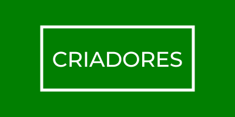

T.I. VERDE
“Green IT" ou "Tecnologia da Informação Verde" é um conjunto de todas as atividades e soluções providas por recursos de computação para tornar o uso da tecnologia mais sustentável e menos prejudicial, ela propõe modos de compatibilizar o uso de recursos naturais de forma adequada às políticas sustentáveis existentes dentro das organizações. Alguns exemplos são o uso de recursos tecnológicos que consumam menos energia, o uso de matéria prima e substâncias menos tóxicas em seus processos produtivos e o descarte responsável de seus produtos através da reciclagem e da reutilização de materiais. A TI Verde engloba, entre outros, o cumprimento da legislação ambiental e os diagnósticos dos aspectos e impactos ambientais de atividades relacionadas à área da Tecnologia da Informação, seguindo e desenvolvendo procedimentos e planos de ação com objetivos de eliminação ou diminuição da agressão ambiental. Cada vez mais utilizado no século XXI, o TI verde é um conjunto de ações que torna o processo de produção de equipamentos menos prejudicial ao meio ambiente. O objetivo é produzir produtos que consomem menos energia, evitar a utilização de metais pesados e o uso de componentes químicos e tóxicos, além de aumentar a quantidade de materiais recicláveis na fabricação dos produtos. A TI Verde (ou Green IT) engloba também o cumprimento da legislação ambiental e diagnósticos dos impactos ambientais de atividades relacionadas a área.
Após a Revolução Tecnológica a sociedade passou a ter um comportamento marcado pelo consumismo desenfreado de bens e recursos, de desperdícios e da ausência de cuidados no descarte de resíduos, tudo isso passou a chamar atenção de parte da população que começou a pensar nas consequências disso no meio ambiente. Esta mesma preocupação foi sentida pelos mais diversos setores da economia, o que levou governantes, empresas e sociedade civil a buscar medidas para contenção de impactos ambientais e preservação do planeta. Este movimento de massas preocupadas em compatibilizar o crescimento econômico com a manutenção do meio ambiente saudável toma força nos anos 90, quando se estabelece o conceito de sustentabilidade, ficando claro que para a conservação do planeta ser efetiva seria necessário rever os modos de produção de forma a torná-los menos degradantes ao meio ambiente. Diante deste alerta e da nova mentalidade surge o TI Verde, que foi criado por empresas de tecnologia com a finalidade de aliar os recursos disponíveis às políticas de sustentabilidade e economia dentro das organizações.
Faz parte do T.I. Verde as medidas de contenção de gastos elétricos excessivos, como o uso de monitoramento automático de energia nos equipamentos e o desligamento dos mesmos, a utilização de lâmpadas fluorescentes e a otimização da temperatura das salas. As empresas podem fazer medidas mais radicais como a criação de uma nova infraestrutura na rede elétrica visando à sua maior eficiência e sistemas computacionais de menor consumo elétrico (incluindo novas políticas internas e medidas de controle de seus descartes) ou até a implementação estrutural de um parque tecnológico visando a maximização do desempenho com o mínimo gasto elétrico (com projetos de sistemas de refrigeração, iluminação e disposição de equipamentos no local)
Tiveram um consumo energético
40
%

mais eficiente
Obtiveram uma redução de
500
mil reais

em custos
Deixaram de cortar
500
Árvores

por ano
UMA NOVA FORMA DE SE PENSAR
ISSO É O T.I. VERDE
Esse site foi feito para um trabalho semestral na Escola e Faculdade Fortec com o objetivo de usar os conhecimentos adquiridos no curso e também promover ações a favor do Meio Ambiente. O tema principal tem a função de conscientizar todos os visitantes sobre a necessidade que temos de cuidar do meio ambiente e o nosso tema, o T.I. Verde, tem o objetivo de mostrar essa pratica importante e simples que nós da área de T.I. deveríamos zelar. Todos os temas, seja "Sustentabilidade", "T.I. Verde", entre outros, são assuntos importantes e práticas relacionados a eles devem estar nos nossos hábitos.
